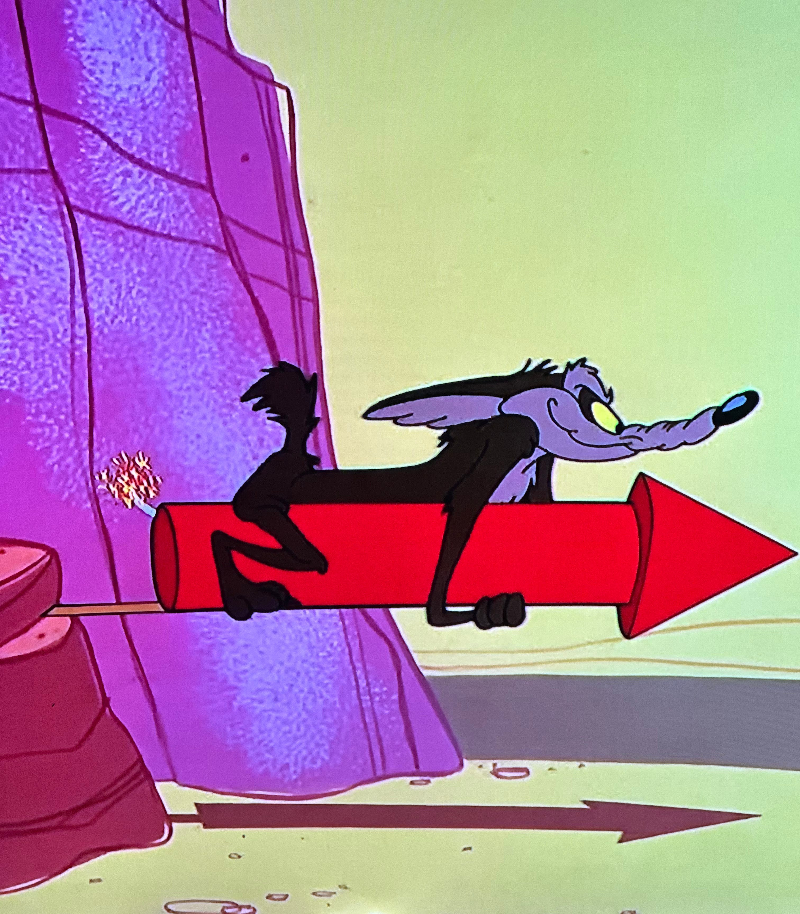
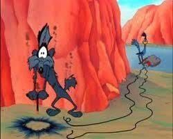

Wile .E Coyote's life goal is to eat roadrunner. He sets a bunch of traps for roadrunner and every time roadrunner defeats his traps one way or another. Wile .E Coyote end up getting injured pretty much every time. He also should have got mvp for space jam. He hit 524 points. He also is known for his signs that he holds up whenever he is in trouble.
The stages of Wile E. Coyote
Stage 1:
 Coyote startStage 2:
 Coyote signs
Coyote signs
Stage 3:
 Coyote signsStage 4: